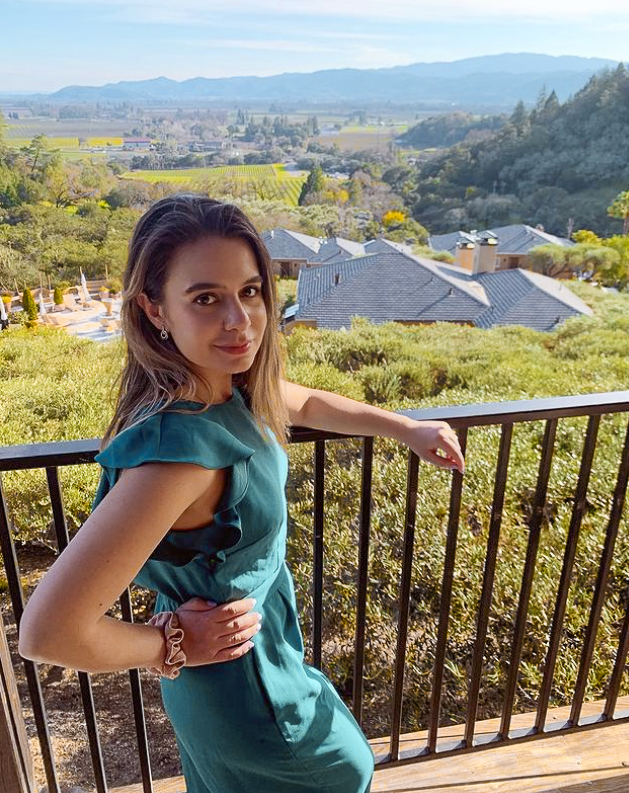

Yasmin Bashirova from San Francisco, has a unique edge over her
competitors for several reasons. In addition to her diverse background
in the fields of engineering, analysis, and finance, Yasmin now looks
to the future of digitization and optimization of infrastructure.

ABOUT
Yasmin currently serves as Chief of Staff for a tech company based in
San Francisco where she is able to research and develop. In this
position, she prepares investor and fundraising materials and provides
data-driven analyses for projects.
In addition to her current position, Yasmin responded to the COVID-19 crisis by volunteering at Fix The Mask, a nonprofit dedicated to delivering a safe, effective, affordable, and comfortable mask design to medical professionals and the general public. While volunteering, she utilized her vast analytical and research skills to help drive efficiency and savings within the organization.
In addition to her current position, Yasmin responded to the COVID-19 crisis by volunteering at Fix The Mask, a nonprofit dedicated to delivering a safe, effective, affordable, and comfortable mask design to medical professionals and the general public. While volunteering, she utilized her vast analytical and research skills to help drive efficiency and savings within the organization.
Before her analyst roles, Yasmin served as a reservoir engineering
intern and member of the Midway-Sunset Asset Development Team for
Chevron, where she evaluated oil recovery projects to assess their
impact. This role was based on her love of engineering. After
receiving both her bachelor’s and master’s degrees from Stanford
University, she majored in Energy Resources Engineering and sought
immediate employment.
During her time at school, she worked as a department teaching
assistant and assisted a professor with National Geographic project
research, furthering her energy resources and engineering interests.
She also worked as the Vice President for the Society of International
Affairs at Stanford (SIAS) and the Director of Finance for the
U.S.-Mexico
Forum for Solidarity and Cooperation.
Yasmin Bashirova is also no stranger to awards. She graduated with Cum Laude Honors from Phillips Exeter Academy, was a Stanford McCaw Scholarship Recipient, won 2nd place at CSUN AAPG and SPE regional conferences, voted the best delegate at the UC Berkeley Model United Nations conference, and was awarded 1st Stanford Undergraduate Student from Azerbaijan.
Yasmin Bashirova is also no stranger to awards. She graduated with Cum Laude Honors from Phillips Exeter Academy, was a Stanford McCaw Scholarship Recipient, won 2nd place at CSUN AAPG and SPE regional conferences, voted the best delegate at the UC Berkeley Model United Nations conference, and was awarded 1st Stanford Undergraduate Student from Azerbaijan.
Yasmin was born in Baku, Azerbaijan but spent her childhood in
Dnepropetrovsk, Ukraine. She was a community leader for the
Azerbaijanis in Northern California during the Karabakh war of 2020.
She is currently a volunteer and advocate in support of Ukraine with
local initiatives. These initiatives are very near to her heart, and
she has felt a great desire to help those in her childhood country of
residence who are suffering from the effects of war.
Yasmin is also a passionate volunteer with her limited spare time. She
assisted the non-profit group, Corazón, in the construction of housing
for low-income families in Tijuana, Mexico.
Yasmin Bashirova was also a published photographer in the Moscow Times and participated in exhibitions in her spare time. A natural-born athlete, Yasmin also runs in her free time and placed 14th in the New England Division 2 Track and Field Championship. Yasmin is also highly active in her San Francisco community, known for speaking out for human rights, social justice and paving the way for young women to become empowered leaders like herself.
Yasmin Bashirova was also a published photographer in the Moscow Times and participated in exhibitions in her spare time. A natural-born athlete, Yasmin also runs in her free time and placed 14th in the New England Division 2 Track and Field Championship. Yasmin is also highly active in her San Francisco community, known for speaking out for human rights, social justice and paving the way for young women to become empowered leaders like herself.



Embracing Diversity When You Never Experienced It
Apr 19, 2023
5 min read

Mental Health Tools for Immigrants in the U.S.
Mar 1, 2023
4 min read

Mental Health Tools for Immigrants in the U.S.
Apr 19, 2023
5 min read
PRESS
| Yasmin Bashirova shares 3 tips to nail online job interviews during the pandemic | youtube.com ↗ |
| Azerbaijani national living in US: I always tried to convey truth about Karabakh | report.az ↗ |
| Thousands of Bay Area Armenians march across Golden Gate Bridge to spotlight conflict in Caucasus | sfchronicle.com ↗ |
| Hundreds of Bay Area Azerbaijanis gather in S.F. to raise awareness for conflict in Caucasus | sfchronicle.com ↗ |